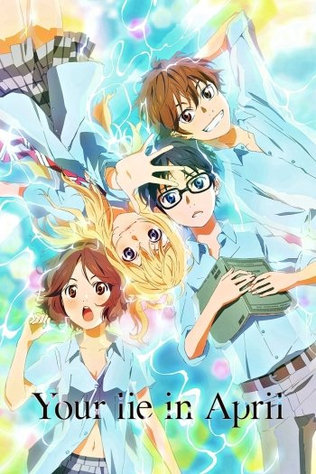
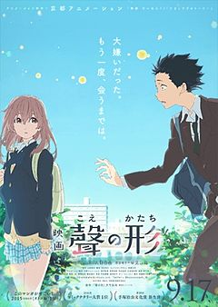

Le pianiste prodige Kousei Arima a remporté de loin le concours musical et est devenu célèbre parmi les musiciens pour enfants, malgré un style musical controversé. Après la mort de sa mère, Saki Arima, une instructrice stricte, le garçon a fait une dépression nerveuse alors qu'il jouait un récital de piano alors qu'il n'avait que onze ans. En conséquence, il n'est plus capable d'entendre le son de l'instrument dont il joue, même si son ouïe est parfaite. Même deux ans après l'incident, Kousei a cessé de jouer du piano et prétend voir un monde gris, complètement insipide et sans joie. Alors il s'est résigné à vivre avec ses meilleurs amis, Tsubaki et Watari – jusqu'à ce qu'un jour, une fille change tout. (...)
Ishida Shōya est un garçon actif qui est proche de deux amis, Shimada et Hirose. L'histoire commence lorsque Nishimiya Shōko - une fille de 6e année avec une perte auditive congénitale est transférée dans la classe Shōya. Au début, tout le monde était excité de commencer une conversation avec Shōko, mais elle a disparu alors qu'ils en avaient marre de sa façon inhabituelle de communiquer. Même Ueno - la fille qui a beaucoup aidé Shōko quand elle est entrée dans cette classe lui a tourné le dos. Alors que Shōko était ostracisée par la classe, Sahara était la seule à vouloir lui parler, mais en raison de la pression des pairs, Sahara a changé d'école. Shōya était en partie par curiosité, en partie parce qu'elle sentait que Shōko avait changé son environnement et avait commencé à l'intimider, même si Shōko était toujours prête à se lier d'amitié avec lui. (...)
